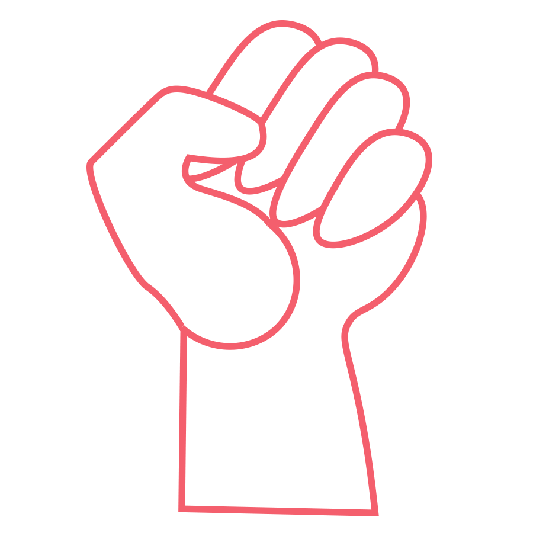
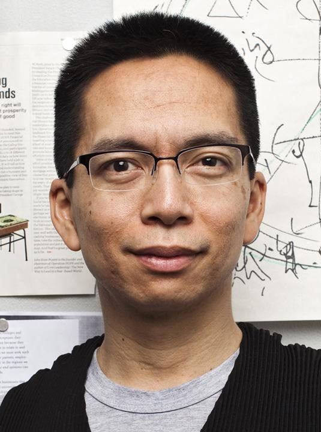
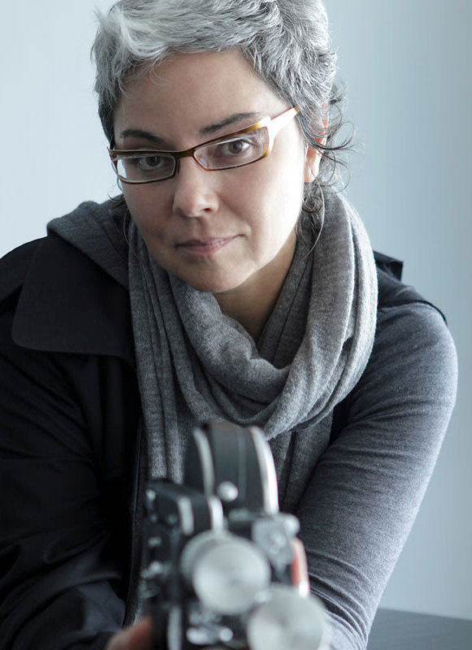

<!doctype html>

<head>
    <link rel="stylesheet" href="css/reset.css">
    <link rel="stylesheet" href="css/template.css">
    <link href="https://fonts.googleapis.com/css?family=Open+Sans:400,600,700" rel="stylesheet">
    <link href="https://fonts.googleapis.com/css?family=Lato:400,700,900" rel="stylesheet">
    <link href="https://fonts.googleapis.com/css?family=Abril+Fatface|Gravitas+One|Playfair+Display|Vollkorn:600" rel="stylesheet">
    <link href="https://cdn.rawgit.com/michalsnik/aos/2.1.1/dist/aos.css" rel="stylesheet">

    <style>
        .height-500 {
            height: 500px;
        }

        .height-250 {
            height: 250px;
        }

        .height-500 {
            height: 500px;
        }

        .height-600 {
            height: 600px;
        }

        .height-700 {
            height: 700px;
        }

        @keyframes header {
            0% {
                font-family: 'Vollkorn:600';
                color: #81C3B3;
            }
            20% {
                font-family: 'Playfair Display';
                color: #F4606E;
            }
            40% {
                font-family: 'Lato';
                color: #FFCC66;
            }
            60% {
                font-family: 'Vollkorn:600';
                color: #003F9A;
            }
            80% {
                font-family: 'Open Sans';
                color: black;
            }
            90% {
                font-family: 'Abril Fatface';
                color: #F4606E;
            }
            100% {
                font-family: 'Open Sans';
                color: #003F9A;
            }

        }

        #nav {
            position: fixed;
            background-color: white;
            z-index: 3;
        }

        .logo {
            position: relative;
            top: 2px;
            left: 50px;
            height: 110px;

        }

        ul {
            text-decoration: none;
            margin: 0;
            padding: 0;
            font-family: 'Open Sans', sans-serif;
            font-weight: 600;
            position: relative;
            top: -45px;
            font-size: 15px;
        }

        li {
            display: inline;
            position: relative;
            left: 1000px;
            top: -20px;
            padding: 20px;
            text-decoration: none;
        }

        a {
            text-decoration: none;
            font-family: 'Open Sans';
            color: black;
        }

        a visited {
            color: black;
        }

        a:hover {
            color: grey;
        }

        .ticket {
            background-color: #F4606E;
            width: 20px;
            height: 5px;
            color: white;
        }

        .ticket:hover {
            color: white;
            font-size: 17 px;
        }

        #cheryl-photo {
            width: 250px;
            position: absolute;
            top: 300px;
            left: 350px;

        }

        .cheryl-name {
            font-family: 'Lato';
            font-size: 60px;
            position: absolute;
            top: 310px;
            left: 560px;
            color: #F4606E;
            animation: header 2s ease-in-out infinite;

        }

        .cheryl-description {
            font-family: 'Lato';
            font-size: 20px;
            position: absolute;
            top: 380px;
            left: 620px;
            color: black;
            width: 600px;
            line-height: 2;
        }

        #cheryl-icon {
            width: 250px;
            position: relative;
            left: 600px;
            top: 490px;
        }

        #john-photo {
            width: 250px;
            position: absolute;
            top: 900px;
            left: 350px;

        }

        .john-name {
            font-family: 'Lato';
            font-size: 60px;
            position: absolute;
            top: 930px;
            left: 570px;
            color: #F4606E;
            animation: header 2s ease-in-out infinite;
            ;
        }

        .john-description {
            font-family: 'Lato';
            font-size: 20px;
            position: absolute;
            top: 1000px;
            left: 630px;
            color: black;
            width: 600px;
            line-height: 2;
        }

        #john-icon {
            width: 250px;
            position: absolute;
            left: 610px;
            top: 1100px;
        }

        #rebeca-photo {
            width: 250px;
            position: absolute;
            top: 1490px;
            left: 350px;

        }

        .rebeca-name {
            font-family: 'Lato';
            font-size: 60px;
            position: absolute;
            top: 1530px;
            left: 570px;
            color: #F4606E;
            animation: header 2s ease-in-out infinite;
            ;
        }

        .rebeca-description {
            font-family: 'Lato';
            font-size: 20px;
            position: absolute;
            top: 1600px;
            left: 610px;
            color: black;
            width: 600px;
            line-height: 2;
        }

        #rebeca-icon {
            width: 250px;
            position: absolute;
            left: 610px;
            top: 1660px;
        }

        #white-space {
            background-color: red;
        }

        /***----shapes---***/

        .triangle-up {
            width: 0;
            height: 0;
            border-left: 100px solid transparent;
            border-right: 100px solid transparent;
            border-bottom: 200px solid #81C3B3;
            position: absolute;
            top: 950px;
            left: 950px;
            transform: rotate(90deg);


        }

        .halfcircleyellow {
            height: 100px;
            width: 200px;
            border-radius: 90px 90px 0 0;
            background: #FFCC66;
            position: absolute;
            top: 430px;
            left: 950px;
            transform: rotate(90deg);

        }

        .rectangleteal2 {
            height: 200px;
            width: 100px;
            background-color: #F4606E;
            position: absolute;
            top: 1590px;
            left: 1100px;
            transform: rotate(90deg);
        }

        /****---footer---****/

        .footer {
            background-color: black;
            z-index: 10;
        }

        .footer-text {
            color: white;
            padding: 30px;
            font-family: 'Lato';
            font-size: 18px;
            line-height: 1.5;
            position: relative;
            top: 120px;
            left: 150px;
            z-index: 11;
        }

        #icon {
            width: 80px;
            position: relative;
            top: 150px;
            left: 100px;
            padding: 5px;
            z-index: 11;
        }

    </style>
</head>


<body>

    <div class="col-12 height-100" id="nav">
        
        <ul class="nav">

            <li><a href="index.html">HOME</a></li>
            <li><a href="speakers.html">SPEAKERS</a></li>
            <li><a href="schedule.html">SCHEDULE</a></li>
            <li class="ticket"><a href="https://www.eventbrite.com/">TICKETS</a></li>
        </ul>
    </div>

    <div class="col-12 height-500 speaker1">
        <div class="halfcircleyellow" data-aos="fade-out"></div>
        
        <h class="cheryl-name" data-aos="fade-out">Cheryl D Miller</h>
        <p class="cheryl-description" data-aos="fade-out">Designer and Activist, wrote the 1987 article “Black Designers: Missing in Action”, which started the discussion of the lack of black designers in the industry</p>
        
    </div>

    <div class="col-12 height-500 speaker1">
        <div class="triangle-up" data-aos="fade-out"></div>
        
        <h class="john-name" data-aos="fade-out">John Maeda</h>
        <p class="john-description" data-aos="fade-out">Designer and technologist,Global Head of Diversity and Inclusion at Automattic, in which addresses how closing the diversity gap, as well as design principles, can utilize the tech industry.</p>
        
    </div>

    <div class="col-12 height-500 speaker1">
        <div class="rectangleteal2" data-aos="fade-out"></div>
        
        <h class="rebeca-name" data-aos="fade-out">Rebeca Mendez</h>
        <p class="rebeca-description" data-aos="fade-out"> Designer and artist, uses design as a “social force”, dedicating at least half of her work pro bono or social causes.</p>
        
    </div>

    <div class="white-space col-12 height-600">
    </div>


    <div class="footer col-4 height-250">
        <p class="footer-text">Palace of Fine Arts,<br>3301 Lyon St, San Francisco,<br>CA 94123</p>

    </div>

    <div class="footer col-4 height-250">
        <p class="footer-text">415.522.4072<br>diversitycon@adc.com</p>

    </div>

    <div class="footer col-4 height-250">
        
        
        
    </div>

    <!----plugin--->

    <script src="https://cdn.rawgit.com/michalsnik/aos/2.1.1/dist/aos.js"></script>
    <script type="text/javascript">
        AOS.init({
            duration: 1200,
        });

    </script>

    <!----plugin--->


</body>
